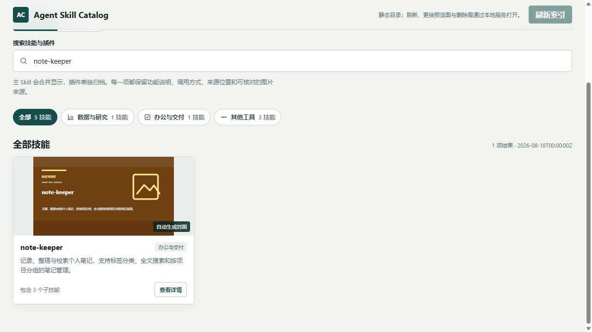
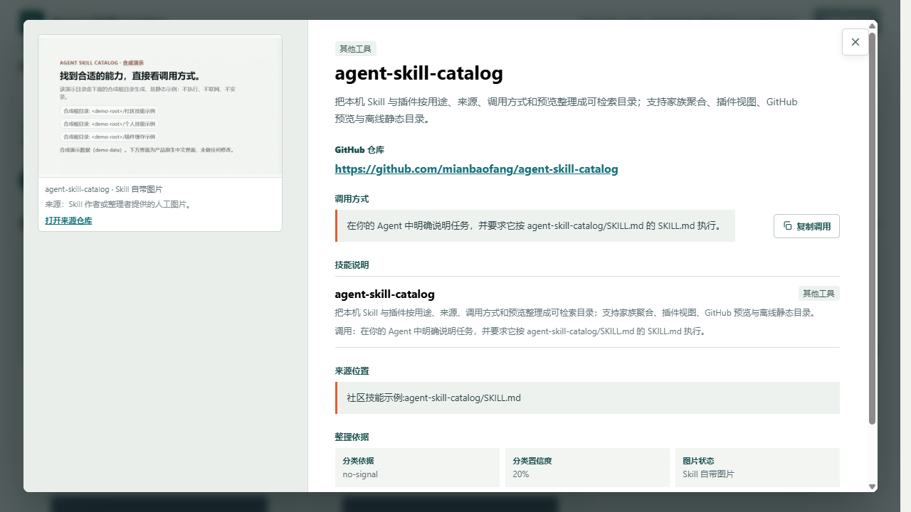

搜索你已经安装的 Agent Skills
选定一个明确根目录，生成目录，按名称或说明搜索，并打开某个 Skill 的调用方式和来源。
阅读教程 →用 GitHub CLI 安装已发布的 Skill，或从本仓库的克隆里运行构建器。真正保持离线的是下面的 build_catalog.py 命令；它不读取 GitHub，也不会等待缺失的中文说明。
gh skill install mianbaofang/agent-skill-catalog agent-skill-catalog --pin v0.4.0 --agent codex --scope user
gh skill install mianbaofang/agent-skill-catalog agent-skill-catalog --pin main --agent codex --scope user
python skills/agent-skill-catalog/scripts/build_catalog.py --root "/path/to/skills" --output-dir "/path/to/catalog-output" --no-github-discovery --no-github-images
用 gh 安装时会按设计从 GitHub 获取 Skill。第一条命令固定当前已发布的版本 v0.4.0。第二条固定 main 分支，跟踪各版本之间的最新源码，适合开发用途。
任务教程
每篇教程只解决一个具体任务，含跨平台命令、预期结果、边界和排错。
从文件夹到可用索引
Skill 扫描只限于你指定的 Skill 文件夹和可选插件缓存。整个流程还会读取你传入的配置与整理文件，并在发现功能开启时读取已确认的 Git 元数据。
为每个条目保留分类置信度、来源位置、调用方式、家族分组和图片来源，可追溯。
浏览本地页面，对比相似条目，打开详情后再决定是否让 Agent 使用。
详情里有什么
它面向反复查找的日常工作：搜到名称后，先看详情，再决定是否让 Agent 使用。


把边界说清楚
构建过程是只读的：它只读取你提供的根目录，把生成的 JSON、缓存预览图和手工换图写入选定的输出目录。但只读浏览有一个例外，而且需要显式开启：可选的本地服务可以永久删除扫描来源中一个顶层独立 Skill 目录，前提是你对该根目录把 allow_delete 设为 true 并确认完整 Skill 名称。没有同步或自动安装。
不保证。不加参数时，构建器可能把 Skill 名称发送到 GitHub 仓库搜索，并为每个已确认仓库抓取一张公开预览图。加 --no-github-discovery --no-github-images 可让构建完全不发出 GitHub 请求；运行说明队列时再加 description_queue.py next --no-github-readmes。
对 Skill 名称、说明、GitHub 信息和来源相对路径做子串匹配。它不是语义搜索或自然语言搜索，也不会给“哪个 Skill 最适合这个请求”排序。
当配置根目录和包证据足够明确时可以。插件聚合有单独视图，不计入独立 Skill 数量。
快速预览即使中文说明缺失也会生成并显示条目。追加 --require-complete-descriptions 后，说明队列未清空时构建会以退出码 3 结束；退出码 0 且 pending_description_count 为 0 才表示完整目录已完成。
生成的目录界面当前是中文。本站和仓库 README 提供英文和中文两个版本，但这不代表生成的界面本身支持双语。
文件夹继续留在本地，把来源、调用方式、关系和证据放进一个可搜索的目录。